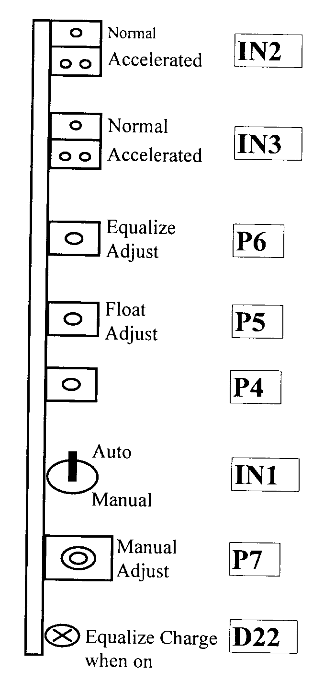

Substations Technical Procedure
Battery Charger
TSR mod 220
Issued To: Networks
Equipment Inspection (I1-M3)
|
|
Substations Technical Procedure |
|
| Equipment: Battery Charger TSR mod 220 |
Document No: CH-001-r0 | |
|
Issued To: Networks |
||
| Status: APPROVED | ||
| Procedure: Equipment Inspection (I1-M3) |
Date Approved: 06 Feb 2000 | |
| Review Date: Feb 2005 | ||
Introduction
This charger has two possible operating modes, Manual and Automatic. Selection of either mode is made using the switch IN1. Down for manual and up for automatic.
Safety Precautions
A work permit must be issued.
Charger must be isolated.
Wear your safety helmet, shoes goggles, rubber glove.
No smoking is permitted in battery room
Tools and Equipment
Digital DC voltmeter, small screw driver.
Blower or vacuum cleaner.
Work to be Carried Out
Under no circumstances should the equipment be allowed to stay in the manual position
In the automatic position the charger regulates the float (normal) voltage automatically and is adjusted using potentiometer “P5”. When the main AC power supply is off for longer than 5 minutes the charger automatically goes to equalize (charge) for 15 hours when restarted. When the Lamp D22 “fig 1” is lit, this indicates the battery charger is on equalize charging mode. Adjustment of the equalize voltage is done using “P6” fig 1
In manual operation,”P7 “ adjusts the voltage but is unregulated and can cause damage to the battery and connected equipment if improperly used. The manual mode is not used in the procedure. More information on this charger can be obtained in the Station Manual - Cogelex Alsthom, volume #4, section VIII.2.
Before Charger is taken out of the service
Check that lamp D22 is off, indicating that the charger is on float voltage level.
Using a digital DC voltmeter, check the normal operation float voltage. The voltage should be 225.75 plus or minus l volt. Adjust if necessary by adjusting screw “P5” (see fig 1). Clockwise increases voltage and counterclockwise decreases voltage. Adjust slowly avoiding current limit and allowing battery time to settle down.
Turn off Charger
Check the general physical condition of the charger with special attention to door gasket and air vents.
Inspect the general condition of the internal components. Look for loose wire connections, loose component mountings and sign of overheating.
Clean the battery charger using a blower inside and out.

Figure 1
Charger in service
Check that the “loss of battery charger alarm” in the control room has cleared.
With the charger being turned off for more than 5 minutes, the charger should be operating on the equalize voltage when returned to service. Lamp D22 should be lit indicating equalize charge rate.
Using a digital DC voltmeter, check the equalize/charge voltage. The voltage should be 244.65v plus or minus l volt Adjust if necessary using adjusting screw “P6” (see fig. 1). Clockwise increases voltage and counterclockwise decreases voltage. Adjust slowly avoiding current limit and allowing battery time to settle down.
The charger can be returned back to float voltage if desired by switching the 2 switches IN2& IN3 so that the two points are visible (accelerated time) on both. This will speed up the internal clock so that the 16 hrs. for charge will pass in about 4 minutes. Return the switches IN2& IN3 back to showing one visible point showing (normal time) when finished.
Final Checks
This battery charger should be in the normal condition when finished.
IN1- up for automatic
IN2- one point showing
IN3- one point showing
D22- on if equalize/charge, off if float charge.
Record results and comments on this form
Location:
Equipment code:
Checked by:
Date:
Signature: